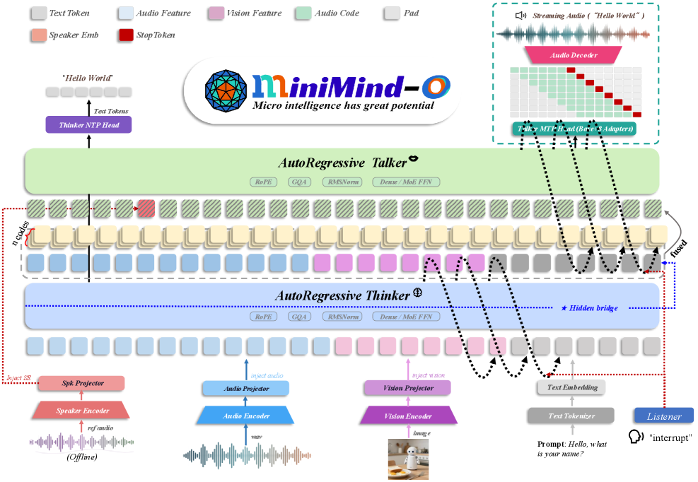
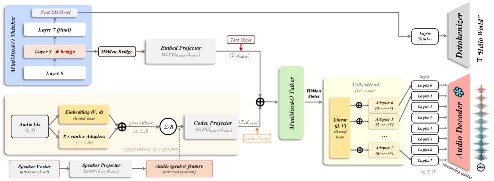
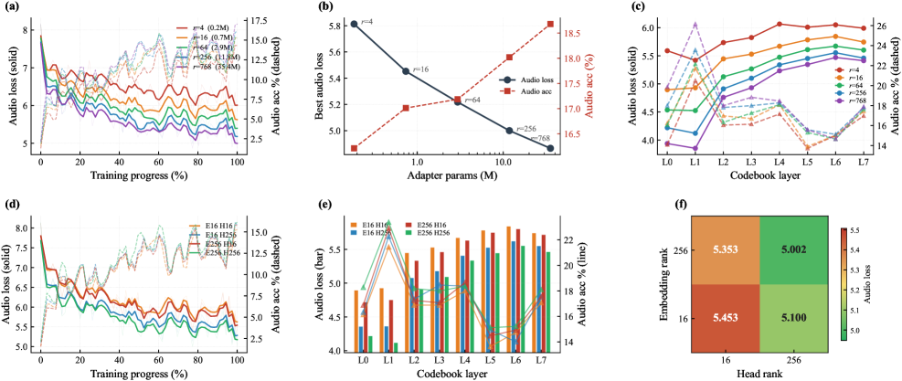
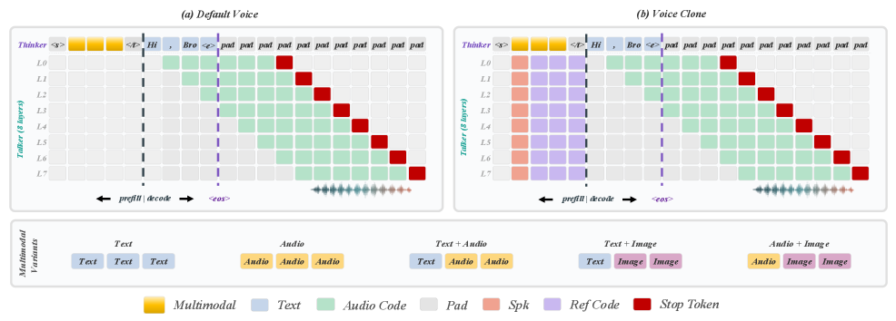
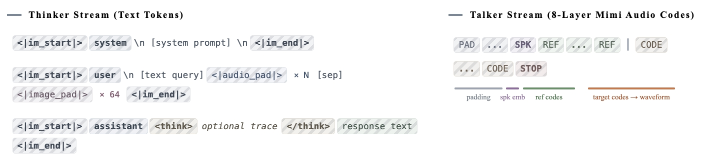
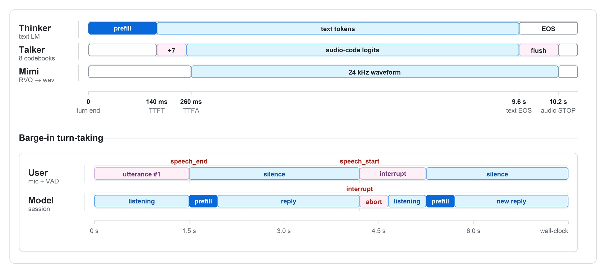

MiniMind-O Technical Report: An Open Small-Scale Speech-Native Omni Model
GPT-4o、Qwen-Omni、Moshi 等模型已将实时多模态交互从产品界面问题推进为模型设计问题。然而，现有系统的典型工程路径仍是级联式的：ASR 将语音转为文本，LLM 生成回答，TTS 渲染波形。这种路径虽可运行，但将语言模型置于声学环路之外——一旦语音模块外置，发音错误、时间控制和说话人控制的归属就难以追溯到共享表示。
MiniMind-O 的出发点恰恰相反。它的基座模型是 MiniMind，而非亿级规模的骨干网络，因此每一个新增模态都必须穿过一个极小的隐空间。这使得该系统成为全模态模型设计的有用压力测试：在大规模下仅仅是"方便"的组件，在 0.1B 规模下必须变得显式且可度量。
论文的核心动机可以概括为：在小规模下验证全模态模型的关键设计因素——中间层语义桥接、可复现的多模态序列格式、参数高效的八码本接口——是否仍然必要且有效，而非仅在大规模下"凑巧能用"。
MiniMind-O 的架构（如图 1 所示）将语义路径和声学路径分开。Thinker 是完整的 MiniMind Transformer，接收正常的文本嵌入以及经过投影的 SenseVoice 语音特征和 SigLIP2 视觉特征，注入到音频和图像占位符位置。Talker 是一个独立的四层模块（从 MiniMind 块初始化），有自己的 RMSNorm、Mimi 码嵌入、码本投影和音频码头。

Talker 在前向传播中读取两个投影流的加和：经 embed_proj 映射的桥接状态（乘以可学习的文本缩放因子）和经 codec_proj 映射的 Mimi 码嵌入（乘以可学习的音频缩放因子）。因此 Talker 同时读取语义状态和自回归 Mimi 码历史，而非仅作为语言模型的简单后缀。
说话人控制被嵌入在音频码缓冲区而非文本流中。如果说话人嵌入可用，数据集在参考码区域前预留一个位置，填充八层 <|audio_spk|>，模型将该位置的 Talker 嵌入替换为投影后的 192 维 CAM++ 向量。参考 Mimi 码在目标语音区域前右对齐，作为条件上下文而非重建目标——这确保同一声音可被用于不同句子的生成。

小规模全模态模型对桥接层位置极为敏感。嵌入层主要包含词元身份和注入的多模态特征，尚未积累足够的上下文来解决发音、语法或跨模态引用。最后一层则有相反的偏差——它已被下一个文本词元分类器塑造，隐状态携带 LM 头的几何和词元选择噪声，而非 Talker 所需的声学条件。
MiniMind-O 因此从 Thinker 的中间层提取桥接状态（默认为 num_hidden_layers // 2 - 1，在八层 MiniMind 中为第 3 层）。一致性实验表明，桥接层过深会增加 Talker 的 CER，这是声学路径被过度特化于文本 logits 的信号。
论文以汉字"地"为例说明这一选择的重要性：该字的发音可以是"de"或"di"，取决于上下文。原始嵌入不编码这种上下文特定发音，而中间隐状态可以在不完全坍缩到下一个词元分类器的情况下携带足够的周围信息。
Mimi 的八个码本本可以拥有八个独立的嵌入表和八个独立的输出头。在实践中，MiniMind-O 采用非满秩的"共享基座+适配器"参数化方案：TalkerEmbedding 使用一个共享嵌入表加上每码本低秩适配器，TalkerHead 使用一个共享线性头加上每码本低秩适配器。这种紧凑接口在 0.1B 规模下尤为重要：模型仍能看到码本特定残差，而大型共享组件不会被重复八次。

每个训练样本是一个九流序列：八个音频码流加一个文本流。Thinker 读取文本流，其中重复的音频或图像占位符标记被投影的 SenseVoice 或 SigLIP2 状态替换的位置。Talker 读取八个音频流。在助手回答前，音频流被填充、可选填充右对齐参考码和说话人词元位置；回答开始后，它们携带目标 Mimi 码。只有目标区域接收音频标签；参考和条件位置保持掩码。
对于包含文本词元 $y_{1:T}$ 和 Mimi 码矩阵 $\mathbf{a}\in\mathbb{N}^{8\times T^{\prime}}$ 的回答，MiniMind-O 优化联合下一个词元目标：
$$\mathcal{L}=\mathcal{L}_{\mathrm{text}}+\lambda_{\mathrm{audio}}\sum_{q=1}^{8}\mathcal{L}_{\mathrm{audio}}^{(q)}$$
其中 $q$ 索引 Mimi 码本层。数据集按码本层延迟音频目标：层 $q$ 从 assistant_start + q + 1 开始。在流式推理中，第一个生成的文本步没有音频输出，八个码层以相同的延迟调度可用。一旦完整的八层帧可用，Mimi 码可增量解码为 24 kHz 波形，因此播放可以在文本回答完成前开始。


训练入口为 train_sft_omni.py，其模式切换简洁：all 更新所有可训练的 MiniMind/Talker/投影器参数；audio_proj 仅训练音频投影器；vision_proj 仅训练视觉投影器。实际训练脚本对密集和 MoE 变体依次运行：sft_t2a 全模型 → sft_i2t 全模型 → sft_a2a 音频投影器 → sft_a2a 全模型 → sft_i2t 视觉投影器。
所有实验在单台四卡 NVIDIA RTX 3090（24 GB）工作站上完成，使用 PyTorch DDP 和 bf16 混合精度。T2A 全模型阶段学习率 $5\times 10^{-6}$ 训练一个 epoch；A2A 音频投影器阶段学习率 $5\times 10^{-4}$ 一个 epoch；A2A 全模型阶段学习率 $5\times 10^{-5}$ 三个 epoch；I2T 全模型阶段学习率 $5\times 10^{-6}$ 一个 epoch。完整训练周期在四小时内完成——0.1B 规模使得消费级 GPU 上的可复现训练成为可能。
| 数据集 | 样本数 | 输入语音 | 输出语音 | 总语音 |
|---|---|---|---|---|
| sft_i2t | ~100K | – | – | – |
| sft_t2a | 1,248,923 | – | 1,636.01 h | 1,636.01 h |
| sft_a2a | 414,024 | 1,711.97 h | 423.40 h | 2,135.37 h |
T2A 数据集的中英文分布接近均衡（45.7% 中文、46.5% 英文、7.8% 混合），而 A2A 数据集以中文为主（70.8% 中文、21.2% 英文、8.0% 混合）。这一分布直接反映在行为上：短中英文回答通常稳定，较长英文回答中发音漂移和遗漏更容易触发。
评估围绕一致性属性构建。对每个提示，模型产生 Thinker 文本和 Talker 音频；音频由 Qwen3-ASR-Flash 转录后与 Thinker 文本比较。内部一致性报告 CER，跨模型比较额外报告 WER。
| 变体 | Talker 隐维度 | 参数量 | 平均 CER ↓ | 短回答 ↓ | 中/长回答 ↓ |
|---|---|---|---|---|---|
| Dense | 768 | 115.29M | 0.0897 | 0.1528 | 0.0874 / 0.0675 |
| Dense | 512 | 96.13M | 0.1745 | 0.2709 | 0.2455 / 0.0976 |
| Dense | 384 | 88.72M | 0.2767 | 0.3904 | 0.1865 / 0.4046 |
| MoE | 768 | 317.05M-A115.33M | 0.0900 | 0.2075 | 0.0533 / 0.0271 |
| MoE | 512 | 261.32M-A96.17M | 0.1265 | 0.0711 | 0.1490 / 0.1464 |
| MoE | 384 | 240.04M-A88.75M | 0.3280 | 0.3757 | 0.277 / 0.431 |
768 维设置是唯一在密集和 MoE 变体中都保持稳定的配置。缩小 Talker 到 512 或 384 虽可节省参数，但也缩小了每个码本头看到的声学状态。由于 Mimi 预测是八层问题，瓶颈会跨码本放大。这一消融排除了简单的缩放假设：Talker 不能仅因为语义计划来自 Thinker 就变得很薄。
| 模型 | 已知说话人 ↑ | 未知说话人 ↑ | 总体 ↑ |
|---|---|---|---|
| 前基线（仅参考码） | 0.6150 | 0.5310 | – |
| minimind-3o | 0.6472 | 0.5654 | 0.5995 |
| minimind-3o-moe | 0.6267 | 0.5702 | 0.5937 |
密集模型在已知说话人上略好，MoE 在未知说话人上略好，总体差距很小。两者均比早期的仅参考码基线有改善。最佳个体声音（uncle_fu、serena、arthur）在至少一个变体上超过 0.70 余弦相似度。
| 模型 | 参数量 | 平均 CER ↓ | 平均 WER ↓ |
|---|---|---|---|
| Mini-Omni | 0.5B | 0.0101 | 0.0185 |
| Mini-Omni2 | 0.5B | 0.0371 | 0.0431 |
| minimind-3o | 0.1B | 0.0964 | 0.0973 |
minimind-3o 的参数量约为对比模型的五分之一，差距集中在中等长度回答。在短回答（≤15 词）上，minimind-3o 与 Mini-Omni2 竞争力接近（CER 0.053 vs 0.050），但在中等长度回答（16–30 词）上明显落后（CER 0.133 vs 0.006）。
| 模型 | 参数量 | 平均 CER ↓ | 平均 WER ↓ |
|---|---|---|---|
| Mini-Omni2 | 0.5B | 0.7609 | 0.9756 |
| minimind-3o | 0.1B | 0.8241 | 1.0293 |
绝对值很高，因为开放式图像描述允许许多有效释义。在此协议下 minimind-3o 落后 Mini-Omni2 但保持在同一量级，同时使用约五分之一参数。
如图 8 所示，增加统一 Rank 改善收敛、最终音频损失和码本精度，但增益在适配器达到几百万参数后变得渐进。解耦实验更具诊断价值：将 TalkerHead Rank 从 16 增到 256 的改善大于同等设置下增加 TalkerEmbedding Rank。这匹配了两个接口的角色——嵌入侧主要读取近期的 Mimi 码历史，而头侧需要分离八码本分布覆盖完整音频词汇。

MiniMind-O 支持实时流式生成和打断（Barge-in）交互。用户说完后，Thinker 先进行语义侧预填充，Talker 开始产出音频码，Mimi 解码器逐帧写入 24 kHz 波形。当用户在模型播放期间再次说话时，系统检测新语音事件，放弃当前生成，开始新的预填充-回答周期。打断检测基于简单 VAD 阈值而非语义理解，但提供了实用的工程环路：系统可以退出说话状态、接受新请求、产出下一条回答，无需等待前一波形完成。
1. 中间层语义桥接的设计验证：证明了在小规模全模态模型中，桥接层位置是关键设计因素。中间层而非最后一层为 Talker 提供了更干净的语义条件，避免了嵌入层上下文不足和最终层过度特化于文本 logits 的问题。
2. 可复现的多模态序列格式：发布了完整的 T2A、I2T、A2A Parquet 数据集，包含文本、图像字节、语音输入、Mimi 码目标、参考码提示和说话人嵌入，固定了确切的序列和码本布局，而非将复现留给私有预处理管线。
3. 参数高效的八码本接口：共享基座+低秩适配器的参数化方案让模型仍能看到码本特定残差，同时共享组件不被重复八次。消融实验证明输出头 Rank 比嵌入 Rank 更重要，使这一选择成为有实证支持的设计决策而非实现捷径。
4. 消费级 GPU 上的完整训练复现：四卡 RTX 3090 上四小时内完成完整训练周期，0.1B 规模使得前沿规模下不可复现的环路变为可控的研究对象。
论文坦诚地承认了以下局限：
论文的核心声明是刻意的窄化：MiniMind-O 不是前沿规模系统的竞争对手；其价值在于完整的全模态环路可以在不将关键选择隐藏于规模背后时被复现和审视。
MiniMind-O 是一篇定位清晰、诚意十足的技术报告。它没有试图以小模型挑战大模型的能力边界，而是选择了一个更有研究价值的角度：在小规模下暴露全模态设计中被规模掩盖的组件必要性。这种"压力测试"视角使得论文的每一个设计选择——中间层桥接而非最后一层、低秩适配器而非满秩独立头、共享数据格式而非隐含预处理——都有对应的实证证据，而非仅凭大规模下的"凑巧可用"。
特别值得赞赏的是数据的完整发布：不仅开源代码和模型权重，还发布了包含确切序列布局的 Parquet 数据集。这解决了全模态系统复现中最隐蔽的障碍——对齐数据、码本目标和模态布局的隐含性。
从实用性角度看，0.1B 规模在短回答和中文对话场景下已达到可用水平，但在较长英文生成和开放式视觉描述上仍有明显差距。这些差距本身也是有价值的：它们精确地标记了小规模全模态模型的当前边界，为后续研究提供了可度量的起点。
MiniMind-O 的贡献不是一个新的大模型，而是一个紧凑、可审视的配方，将语音原生全模态交互转化为可控的研究对象。在0.1B规模下，桥接位置、可复现数据和参数高效码本接口直接决定了整个环路是否可训练和可复现。